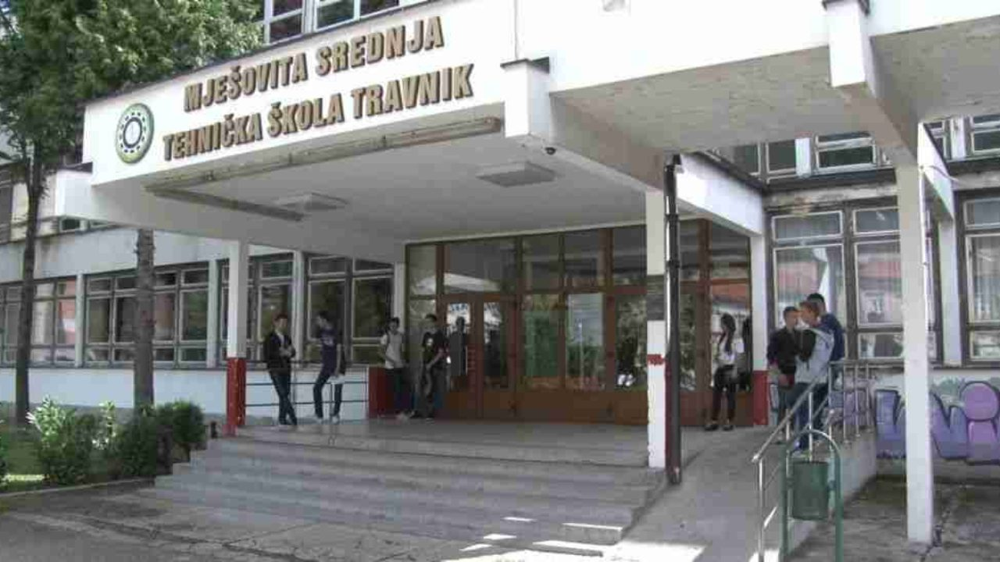
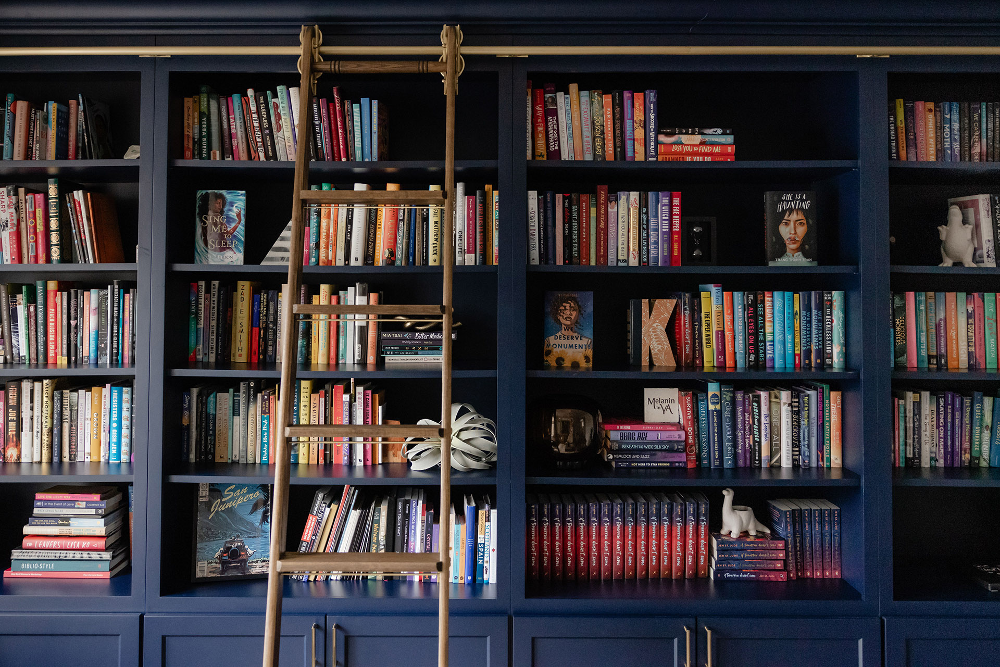

Datum rođenja: 27. August 2003.
Edukacija: 2. godina odsjeka Softversko inženjerstvo, UNZE
Interes: Rješavanje problema intuitivnim načinima, kao i realizaciju novih, zanimljivih i prije svega, korisnih ideja. Projekti koji zahtjevaju kombinaciju čiste logike, analize, implementaciju niskog i srednjeg nivoa sistema kao i korisnički-orijentisanog dizajna
Potražnja: prilike za praksu, privatne projekte ili mlađu poziciju u kojim je neminovan stalni progres i rast oblasti softverskog razvoja i sistemskog pristupa

Pored praktičnih spoznaja, teoretski pokrivam sljedeće oblasti:
swipe for next/previous project ↔
Full stack projekat u saradnji sa kolegama Tašić Tajrom i Kolasević Amelom. Sistem treba da obezbjedi prenos različitih formata podataka na mobilnu aplikaciju API pozivima prema bazi podataka (kućni server) te prikaladan prikaz i puštanje istih u zavisnosti od formata
Korištene tehnologije:
BORBA (v1.3) je konzolna igra na poteze (kao stare pokemon igre) napisana u C++ jeziku. Sačinjena od custom header-only biblioteke za animacije, RAII principa, MVC arhitekture koja je na početku bila monolitna i STL biblioteke.
Korištene tehnologije:

Mobilna aplikacija u fokusu očitavanja vrijednosti sa akcelerometra sa namjenama u:
• Okruženju za manipulaciju objekta (kretanje, veličina, brzina) u stvarnom vremenu
• Engine-u koji definiše sudar sa ostalim objektima tokom pokreta (Igre sa nagibom telefona)
• Univerzalnom kontroleru uređaja sa filtriranjem i mapiranjem u svoj format
Korištene tehnologije:


Implementiran terminalni sistem po RBAC principu kojem je glavni zadatak separacija pristupa i mogućnosti po ulogama. Neke od mogućnosti su ostavljanje log traga za određene akcije, uređivanje ciljanog fajla putem konstruisianog editora sličnom Vim-u ili nano naredbi na Linuxu. Ponovna upotreba sopstvenih biblioteka je također ključan dio.
Korištene tehnologije:


Na predmetima vezanim za grafiku i općenito dizajn razvio sam vještinu sistematske podjele potrebnih stavki i komponenti u projektima, sama pravila UI/UX oblasti, te konstantnim radom i znatiželjom razvio sam malo osjećaja za kreiranje grafičkih rješenja po pitanju reklamnih postera, vizit kartica, kao i kompletnih wireframe rješenja za aplikacije. Cjelokupan nivo znanja iz istog mi dobro dođe kao još jedan alat na švicarskom nožu.
Korištene tehnologije:


Statička web stranica koja na prikladan način oponaša CV papir u modernom vremenu. Sadrži sve potrebne podatke o mojoj malenkosti, projektima, tzv. 'soft skills' i posjeduje elegantan dizajn koji naginje ka 'glassmorphism' stilu. Tokom razvoja projekata i nekih dodatnih epoha u životu, stranica će biti onda i ažurnog karaktera gdje će sve biti 'up-to date'
• Napravljena u HTML + CSS + JS komninaciji
• Za prikaz na internetu koristi GitHub Pages
Korištene tehnologije:

Pohađao Osnovnu Školu "Travnik" u Travniku kao i Mješovitu Srednju Tehničku školu "Travnik", smjer Računarstvo i informatika. Odličan uspjeh, kao srednjoškolcu uručena nagrada učenika generacije.

6 godina bavljenja streljaštvom olimpijske discipline (Vazdušna puška 10m). Pored brojnih uspjeha, najveći uspjeh je kao prvak Federacije BiH u kategoriji seniora i nosilac rekorda.

Konstantno učenje novih tehnologija, fizički trening i disciplina. U kombinaciji sa svim tim je razvoj softvera u publici i angažovanje u društvu (redovni darivatelj krvi).